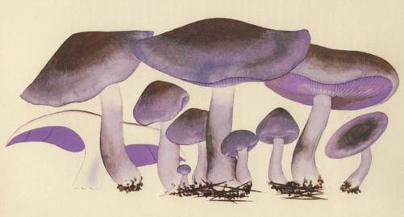

know that mushrooms may soon be their mainstay.1 Our theory finds disturb-
ing support in a book published in Prague just as the Communist curtain was
about to descend on that city. The book dealt with Czech folk food. A peasant
speaking of a mushroom called horyl (from hofeti, 'to burn'), said that it burnt
the mouth even when thrice boiled, yet in the 'great hungers' it was always
eaten, and when hunger and the pest would return, again it would be eaten.2
This link between war and mushrooms can be detected, albeit faintly, in the
Anglo-Saxon world. It is said that during the final phases of the American
Civil War the people in the devastated stretches of the South turned to mush-
rooms for sustenance. Certain it is that a famous botanist living at that time
in the Carolinas, the Rev. M. A. Curtis, wrote how "during the late war I
paid no attention to Botany, except to the edible mushrooms, from which
I have gotten many a substantial and luxurious meal."3 He gladly shared his
esoteric lore with the neighbors, who, food being scarce, were apt pupils,
and such was his success that he embarked on a book to spread the useful tid-
ings. It was to be called Mycophagia Americana, but by the time it was ready,
the war was over and publishers were not interested.
In England during the recent war there were public and private efforts to
increase the consumption of wild fungi. We know one elderly Russian lady
who for a time made good money gathering belyegriby onWimbledon Common,
in full sight of the wondering English. She pickled or precooked them and
sold them to a fashionable restaurant. But, although England's peril was acute,
there was, as things turned out, little actual hunger; and furthermore, when
measured against the long history of a people, the crisis was brief. The times
were not bad enough for mushrooms to take hold. Today there are those
who fear that England's bitterest trials lie ahead, in her peace-time efforts to
feed herself. If chronic want, real want, should for the first time in history
beset the English people, there will be the mushrooms to turn to, and a precious
reserve they will prove to be.
More than a century ago a famous French chef, Louis Eustache Ude, pro-
pounded an ingenious and amusing theory to explain the lackadaisical attitude
of the English toward food and cookery - an ingenious theory it was, but,
as I shall show, completely unsound. He began by denouncing physicians as
'enemies of the art' of cooking, and then he went on:
1. But the Russian saying seems to be widely current in Europe. Consult the entry 'Pilze' in Handworterbuch des
Deutschen Aberglaubens, by E. Hoffmann-Krayer, 1935-6, where we find the German dialectical Viel Schwamma
- vieljamma, the Italian anno fungato - anno tribolato, and the French an de cepere - an de misere, reported in the
Basses Pyrenees.
2. See Mrs. M. Ulehlova-Tilschova's Ceskd strava lidovd, Prague, 1945, p. 57.
3. Neil E. Stevens quotes Curtis in The Scientific Monthly, August 1919, p. 162.
38
MUSHRO OMS AND HISTORY
I am greatly concerned at being obliged to combat a still more powerful, though
amiable, enemy to Cookery. The Ladies of England are unfavorably disposed toward our
art; yet I find no difficulty in assigning the cause of it. It is particularly the case with them
(and indeed it is so in some measure with our own sex) that they are not introduced to their
parents' table till their palates have been completely benumbed by the strict diet observed
in the nursery and the Boarding Schools.1
The baneful influence of the nursery and the boarding school is doubtless all
that the author said, but one would have liked to remind the great Maitre that
the rudiments of any distinguished cuisine grow out of the people, the whole
people, and nothing but the people; that the leisure class merely spin refine-
ments for the most democratic of the arts; and that the people by and large
have never known either nursery or boarding school. If the English in general
seem to the rest of us indifferent to good food, and some of them even disap-
proving of the fine art of pleasing the palate - if the English bill of fare lacks
variety and the good ingredients are spoiled in preparation - these short-
comings of a noble people must go back to deeper, broader causes than the child-
life of the well-to-do. For a thousand years England never knew war - war
as others and especially the Russians suffered it - and England has never known
prolonged, desperate want. Hardship is the school in which people forget food
tabus, and acquire that deep reverence for food and its preparation that inspires
a great cuisine. Everyone who knows anything about Russia will recall that
simple and moving ceremony of hospitality in which bread and salt, symbols
of food, are offered on a tray to the honored guest. That ceremony is an ancient,
almost sacramental expression of reverence for food, and Russia's history gives
meaning to that reverence. In the Anglo-Saxon world only prolonged want will,
some day perhaps, bring about a comparable respect for food. If England, that
land unique in moral resources and spiritual unity, be destined to endure privation
over the coming generations, the hardships will most certainly give birth to new
and lustrous chapters in her history, chapters of stirring and triumphant drama -
and incidentally, I predict, they will bring about at last a worthy English cuisine.
Perhaps the reader by now is protesting that I have overlooked England's
famous warrior past. Oh, yes, I know that her history is studded with decisive
battles. Crecy and Blenheim and Trafalgar and Waterloo, glorious victories
and sometimes glorious defeats. But they were all fought abroad, by a handful
of men at sea or in other people's homes. They were fought way down yonder
among the heathen, somewhere off Flores in the A9ores. Those wars were like
I. The French Cook, by Louis Eustache Ude, one-time cook to Louis XVI and the Earl of Sefton. This work
went through many editions in both England and the United States. The early editions carried an essay entitled,
' On Cookery and its imputed ill effects on health', whence I take my quotation.
39
big-game hunting, stepped up another dimension. Of course there were civil
wars also, back in the lyth century, and the I5th, and under King Stephen,
and there were border frays along the way. But civil wars, however cruelly
fought, lack the ultimate sting, for, whoever wins, members of the family
retain possession of the homestead. No intruder takes over the patrimony.
These comments about wars go for the United States too; broadly speaking,
the tally until our own generation adds up to two civil wars (including the
War of Independence) and a few brief expeditionary ventures.
Yes, whoever seeks seriously to understand Russia must make the needed
effort of intellect and imagination to comprehend the full and awful meaning
of war in the history of the Slavs. This is the first and great imperative. (In the
winter of 1939-40, when the Finnish army seemed for a time to hold its own
with heroic courage against the Russian forces, how often did my American
friends remark to me that, after all, the Finnish successes were not surprising,
since Russia had had no warrior past!) As compared with the West, and especially
the English-speaking world, war for the Russians has been a calamity of a wholly
different and greater order of magnitude. Pause for a moment and consider
this. In the wide range of the English vocabulary are there words of more awful
potency than 'Huns' and 'Tartars'? It was in the fourth century that the Huns burst
like a rocket out of Asia into Europe, and the Mongol hordes followed them
seven centuries later. This was all long ago and far away. The Huns in the end
were stopped on the fields of France, and the Tartars never got into the West.
Yet the mere names of these far-off peoples of ages past still trail clouds of
terror in the minds of nations then unborn, in continents then unknown. The
earliest description of the Tartars by an unidentified Englishman who sojourned
among them will explain in some measure the fearful impact of that strange
and pitiless people on the European mind:
They be hardie and strong in the breast, leane and palefaced, rough and hufshouldred,
having flatte and short noses, long and sharpe chinnes, their upper jawes are low and
declining, their teeth long and thinne, their eye-browes extending from their foreheads
down to their noses, their eies inconstant and blacke, their countenances writhen and ter-
rible, their extreame joynts strong with bones and sinewes, having thicke and great thighes,
and short legs, and yet being equall unto us in stature: for that length which is wanting
in their legs is supplied in the upper parts of their bodies.1
The Slavs, let us remember, met the Huns face to face, and the Russians
bowed to the yoke of the Tartars for three full centuries. Nowadays we hear
i. Richard Hakluyt's Principal Navigations, Hakluyt Society, extra series, Glasgow 1903-4, vol. I, pp. 50, 53.
4 0
PLATE VII
Jean-Henri Fabre. Rhodopaxillus nudus (Fr. ex Bull.) R. Maire.
English: blewit; French: pied bleu.

MUSHROOMS AND HISTORY
glib talk of 'genocide', a new word meaning the murder of a people; but the
Slavs dwelt for centuries on the highways of the Great Migrations, and, had
their powers of survival been less, they would have been absorbed or extermi-
nated many times over. Other nations and tribes did disappear in the ethnic
maelstrom of the Steppes.
'Huns' and 'Tartars' are not the only linguistic contribution to the West
of the Asiatic invaders. No one knows for sure the origin of the word 'ogre';
it probably comes to us from the people called Ugri, known to us as the Hun-
garians, who drove or were pushed into the Danubian plain in the pth century.
Our word 'horde' comes from the language of the Tartars. For them (as for
the Russians to this day) ordd is simply the headquarters of a marching host,
and the Golden Horde was the supreme headquarters on the Volga of the
Tartars who subjugated the Slavs of the steppes and of Moscow. In a lexicon
that comes down to us from the library of the poet Petrarch (the Codex Cumani-
cus) we learn the curious fact that the Asiatic invaders referred to the Holy See
of Rome as the Horde (ordd) of Christendom. The West in taking over the
word changed its meaning to cover the swarms of ferocious invaders. In India
the same word, now Urdu, came to mean the language of the nomad camps.
The Steppes - those moist, fertile plains that fan out to the north of the
Black Sea - are the monumental stage on which from the beginnings of history
East and West have clashed, in an historical drama of epic grandeur. Like the
whirling waters of a rising tide that contend from divers directions for the
mastery of a level beach, through thousands of years a succession of mi-
grating tribes from East and South and West have flowed into the Steppes, and
overrun them, and battled with each other for possession; and then with the
passing of time have vanished into the earth. In recent centuries the Turks
made their vain bid for title; before them, the Tartars, speaking a kindred
dialect. Before the Tartars came the Polovtsi, and before them the Pechenegs.
These last-named warrior peoples are scarcely known to Westerners, but they
left dreadful, indelible scars on Russian memories. Before them came out of
Asia the hard-riding Avars, and before the Avars the Huns. The Avars and
the Huns made general use of bridles, stirrups, and saddles. With their horses
these mounted warriors revolutionized warfare, and rendered the famed Roman
legion obsolete. Before the Huns, from the Baltic, there swept down into the
Steppes and Crimea the Visigoths, the Ostrogoths, and the Goths. Those Goths
were securely settled in the Crimea by 250 A.D., and there they lingered on
for a thousand years. In the middle of the idth century a famous traveler,
de Busbecq, encountered in the Turkish dominions a few individuals who still
41
could recall some words of their ancestral Teutonic tongue. And down even
to our own days, in the Caucasus, there is a fair-haired people whose neighbors
call them, erroneously, the Goths. Before the Goths, the Sarmatians, of Persian
origin, ruled the Steppes for centuries, and before them the Scythians, who
were dwelling in the land when the Greek historian Herodotus went sightsee-
ing up the Dniepr River. And before the Scythians legend tells us of the shadowy
Cimmerians.
In thus spanning the millenniums we have omitted many famous peoples:
the Scandinavians, who swept down from the North through the waterways
of Russia to the very gates of Byzantium; the Greek and later the Italian colo-
nial empires in the Black Sea; the Ugri or Magyars who crossed the Steppes
to settle in what we call Hungary; the Bulgars who once dwelt in the Volga
valley and now till their cherished Balkan soil; the strange and mighty Khazar
Empire on the northern slopes of the Caucasus, whose sovereign had to be
Jewish by religion; the Alani, and the Assi who gave their name to the Sea of
Azov; and many another tribe of uncouth name - the Utiguri, the Kutriguri,
the Onoguri - who lived out their day and vanished.
Compared with those Homeric dramas of the past, how fleeting and insigni-
ficant was Hitler's stab across the Steppes to Stalingrad. In the presence of those
Great Migrations, the history of Western Europe, at least up to the Age of
Exploration, seems to be acted out in miniature, and to give off a slightly
foetid odor as of a hot-house. Viewed in the light of all human history, how
unusual must be the introspective, intensively developed culture of the com-
munities clustered along the Western fringes of the Eurasian Continent. The
world is destined to devote ever more attention to the peoples of Eastern Europe
and the Black Sea Basin, and if the West will unflex its intellectual muscles,
and exercise its capacity for wonder, and lengthen the focus of its mental vision,
what a panorama filled with color and drama will unroll itself!
In the folds of the Caucasus mountains there dwell to this day a score of
isolated peoples, with strange languages many of them as curious as the Basque
of the Pyrenees. Like the Ark on neighboring Mount Ararat, these peoples
have survived the floods of Indo-European and Turkish migrations. They
are the ethnographic moraines of the world that was old before the Old World
was born. Sarmatians, Scythians, and Cimmerians - those ancient peoples are
perhaps mere infants alongside these secluded tribes, whose secrets, if we but
succeed in deciphering them, will make the millenniums seem like centuries.
Little by little our scholars, in our own times, are piecing together the bits
of evidence, and with their aid revising the perspectives in which we view
42
MUSHROOMS AND HISTORY
both ancient Greece and Rome (and that means us their progeny also), against
the background of earlier, Eastern cultures of unfathomed antiquity.
The Black Sea is a deep basin. Its deeper waters are so infused with chemicals
that they sustain no life, and are a graveyard for the detritus of human cultures
that have passed away. Its stormy surface waters forever rotate in a counter-
clockwise flow, suggestive of the human tides that have wheeled around its
shores as around a hub from time immemorial. Behind Greece and Rome loom
more and more, as our study of the past progresses, the cultures of the Black
Sea basin; and the Black Sea becomes the enigmatic eye of history.
The peoples of the Great Migrations erupted into the Steppes explosively,
and then in course of time faded away. The Slavs followed different tactics.
Their entrance on the stage of history was inconspicuous - an odd thing for
the Dramatist to have devised, when you consider the role they were destined
to play. Emerging from the neighborhood of the Vistula, they stole impercept-
ibly into the consciousness of men. Perhaps they figure among the numerous
tribes that Herodotus mentions, but he did not make the identification sure.
Tacitus in 98 A.D. described the Slavs in his book on Germany, and that was
their formal debut in history. A few centuries later, they had spilled out into
the Balkans, and by the pth century the Russians emerge securely established
in Kiev. They were a prolific tribe of farmers, spreading like wire-grass along
the water-courses. Geographically they were of course European, as European
as the Anglo-Saxons. They were European settlers reaching out to the Eastern
frontier, and bearing the brunt of Asiatic attacks. (How ironic it must sound
in Asiatic ears when uninformed Westerners decry the Slavs as 'Asiatics'!
In the course of ten centuries these European Slavs have pushed the Asiatics
out of Europe, and then overrun their own vast Continent to the very shores
of the Pacific.) Unlike the looting nomadic warriors from the East, they were
a sedentary folk. They belonged to the land and the land belonged to them.
There is evidence that in their pagan religion they deified the processes of
nature, and above all their Moist Mother Earth. Their attachment to the fertile
earth is a thing that Westerners, and especially the English-speaking world,
can hardly grasp. The old religion perhaps still runs through their blood. It
is the Russian in me that makes me love to plunge my bare hands in the moist
warm fertile earth, mother earth, the earth that yields us our daily bread, the
food that we reverence as a divine gift, that we worship in the Host. Perhaps
we love our mushrooms the way we do because they seem the earthiest of
nature's growths. From those pagan times a thousand years ago down to now,
the Russians feel themselves attached to the earth viscerally, as by an umbilical
43
cord. In the early Slavonic chronicles the Russians are depicted always as farmers,
not traders or warriors, and their enemies habitually took advantage of this
dependence on the soil to attack their homesteads and villages at harvest time.
The Slavs were already then old hands at taking refuge in the woods, just as
in the recent war, and those were the circumstances under which, ages earlier,
they must have first come into intimate communion with their friends the
mushrooms. As the successive waves of nomads spent their initial force, the
Slavs resumed their steady pressure and retook the beloved land and pushed on.
They were the resistant, tenacious, pushing tortoise, and the invaders were the
showy, easy-come-easy-go hares. The Slavs made some progress in the West
also, and as late as a few centuries ago, the peasants in Holstein and on the
Baltic island of Bornholm were still speaking a Slavic tongue. To this day the
Slav-speaking Wends survive in villages south of Berlin. Many of the place-
names of Germany are Slavic; Stettin means bristles, and it was the port through
which this commodity was exported; and Pomerania is merely Pomorjane -
'inhabitants of the sea-shore'.
The Russians today are a singularly uniform people, as compared with the
extreme mixtures in Western Europe. The traits of the Russians are the traits
of an Indo-European peasant people indigenous to Europe, first Christianized
and civilized under Byzantine influences, and politically shaped by the stern
necessity of waging incessant warfare on all sides for the sheer privilege of
survival. It fell to them to occupy and defend a desirable land devoid of natural
defenses, a rich, land-locked inheritance surrounded by covetous and arrogant
enemies. One reason ofttimes given for the relative uniformity of the Russian
people has been the absence of mountain barriers in their homeland: the geo-
graphical circumstances have encouraged a cultural and ethnic fluidity. But
this explanation proves too much: for precisely the same reason they could
have lost their identity in the vast steppes, exposed forever as they were to
alien peoples on every side, tugging them in every dkection. They survived
as a homogeneous ethnic group and a cultural entity because, for reasons deeply
hidden in the racial strain, they chose to resist foreign encroachments. This
struggle has been the theme of Russia's history - the continual temptation
to assimilate foreign influences, leading to violent rejection in the interests
of self-preservation, and ending in every instance with a deepened sense of
their folk identity, but an identity molded by the ordeal of the never-ending
struggle, molded positively by acceptance in some measure of foreign influences,
and negatively by the self-inflicted effects of violent resistance.
In one of the earliest accounts of Muscovy written by an Englishman, in
44
MUSHROOMS AND HISTORY
Queen Elizabeth's time, there is an observation concerning the Tsar's wars
that could have been repeated with other names at almost any other period:
His enemies with whom he hath warres for the most part are these: - Litto, Poland,
Sweden, Denmarke, Lifland, the Crimmes, Nagaians, and the whole nation of the Tar-
tarians, which are a stoute and a hardie people as any under the Sunne.1
A Continental traveler, Sigismund von Herberstein, writing in Latin a half
century earlier, had remarked of the Russians and their horses that "rest is
seldom given them, for either they are waging war against the Lithuanians,
or the Livonians, or the Swedes, or the Tartars of Cazan; or, if no war is going
on, the prince generally appoints 20,000 men every year in places about the
Don and the Occa, as guards to repress the eruptions and depredations of the
Tartars of Precop."
We saw in the recent war the tough soldier that the Russian makes. His
qualities were not born overnight, nor were they the fruit of a single gen-
eration. He was the heir to an old fighting tradition. Read, if you will, this
account of the same soldier four centuries ago:
They are a kinde of people most sparing in diet, and most patient in extremitie of cold,
above all others. For when the ground is covered with snowe, and is growen terrible
and hard with the frost, this Russe hangs up his mantle, or souldiers coate, against that part
from whence the winde and Snowe drives, and so making a little fire, lieth downe with
his backe towards the weather: this mantle of his serves him for his bed, wall, house and
all: his drinke is colde water of the river, mingled with oatemeale, and this is all his good
cheere, and he thinketh himselfe well, and daintily fedde therewith, and so sitteth down
by his fire, and upon the hard ground, rosteth as it were his wearie sides thus daintily
stuffed: the hard ground is his feather bed, & some blocke or stone his pillow: and as for
his horse, he is as it were a chamberfellow with his master, faring both alike. How justly
may this barbarous, and rude Russe condemne the daintinesse and nicenesse of our Cap-
taines, who living in a soile & aire much more temperate, yet commonly use furred
boots and clokes >
It is safe to assume, I think, that this hardy Russ knew his mushrooms.
I. Richard Hakluyt's Principal Navigations, op. tit., vol. n, p. 438; also, Notes upon Russia, Hakluyt Society,
first series, vol. 10, p. 95. The concluding quotation in this chapter is also from Principal Navigations, vol. n,
pp. 258-9.
45